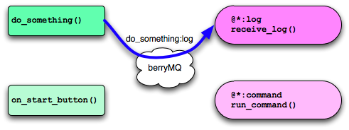
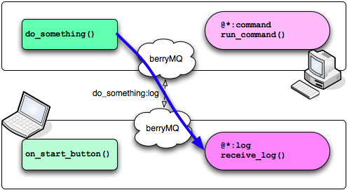
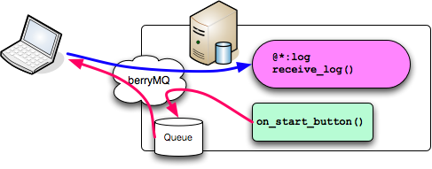

berryMQ is a on-memory tiny message queuing library. Project goal is “programmer friendly MQ”. This not aims reliability, persistency. It will support cross-language messaging(Python, Ruby and so on).
writing ...
Note
This version supports python only.
This is the easiest way to use berryMQ. Show Python sample.
from berrymq import (following_function, twitter)
import time
@following_function("*:log")
def receive_log(message):
print("receive_log: %s @ %s" % (message.id, message.args[0]))
@following_function("*:command")
def run_command(message):
# do job
...
def do_something():
twitter("do_something:log", time.ctime())
def on_start_button_pressed():
twitter("start:command")
There two sender functions and two receivers. twitter() is API for sending message. following_function() is a decorator for a receiver function. Message has a identifier. Identifier consists of two part name and action. Senders and receivers assert which message will be sended or is needed by identifier. Both of parts of identifier can use wild card(*).
If you call do_something() function in above sample, this function send a message do_something:log. This message matches *:log filter of receive_log() function. So receive_log() function will be called. If there are more than one matched functions, all functions will be called.
Warning
This is planning feature.
berryMQ planning inter-process communication. berryMQ sends message via JSON-RPC. So any language which can speak JSON-RPC will be able to connect.
This is an quality connection style. Both side of berryMQ transport all message to each other. Message senders and receivers don’t take care which side messages come from/go to.
One side process doesn’t receive but send message. It is suitable style for logging. Server/Client model.

Usual Message Queue style. Create queue at server side. Client can use only pull API.
Warning
This is planning feature.
twitter() is a monologue function. Method sender doesn’t know who listening to that message. Although it will encourage loose-coupling, it is not convenient in some case i.e. method-chain. I’m planning “talk-back” API:
from berrymq import (following_function, talk)
@following_function("*:process")
def do_process(message):
... do something
@following_function("*:log_result")
def receive_result(message):
logging.info(message.name)
def on_unittest_start_button_pressed(event):
talk("test:process", "test:log_result")
talk() function has two identifiers. Second one is target about callback. After calling first function(in this case do_process()), Second function will be called with the result of first function.